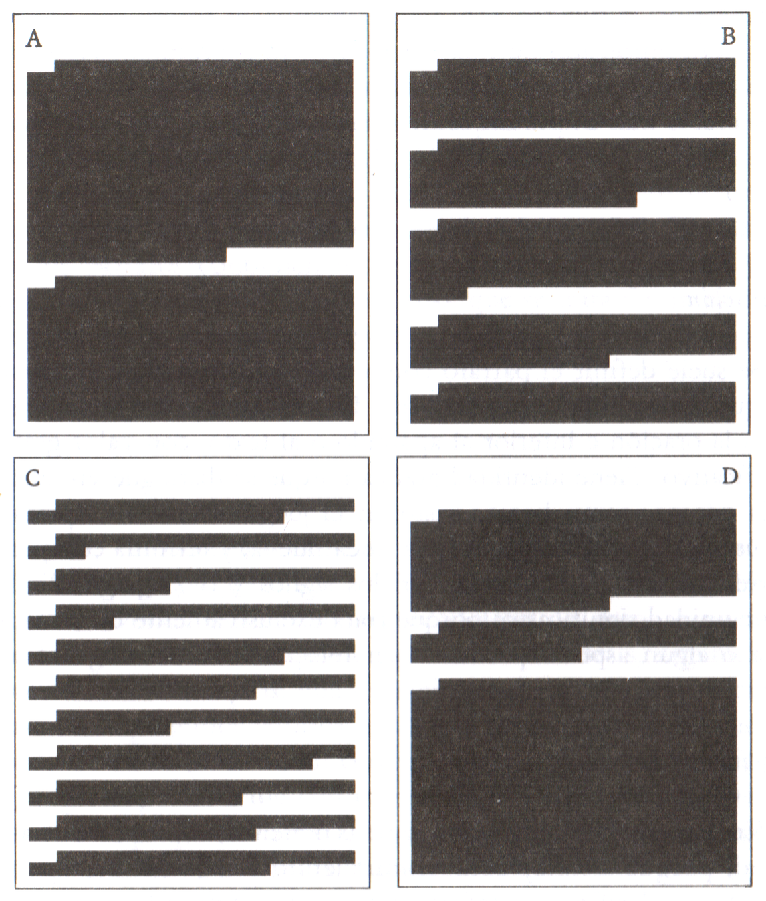

Propuesta didáctica para trabajar aspectos formales de la expresión escrita
(7) Párrafos
¿Qué es un párrafo y cuál es su extensión deseable?
Definir lo que es un párrafo es muy sencillo: un párrafo es cada una de las partes, comprendida entre un punto y aparte y el siguiente, en que se puede dividir un texto y que está compuesta necesariamente de uno o más enunciados que giran en torno a una misma idea (un subtema del texto) que los aglutina. Ahora bien, dividir nuestro texto en párrafos (yendo más allá, configurar correctamente los párrafos de un texto) no resulta tan sencillo.
Partamos de un caso práctico. Imagina que las siguientes páginas (A, B, C y D) son reales y en ellas se muestra la disposición de párrafos en que se han configurado sus respectivos textos. ¿Cuál crees que es la mejor configuración posible? ¿Y por qué?

De acuerdo con Daniel Cassany en La cocina de la escritura, de donde se ha tomado la imagen anterior, no existen directrices absolutas sobre la extensión que ha de tener un párrafo (dependerá del tipo de texto que estemos componiendo, entre otros factores), pero "la respuesta más habitual suele ser la B, que es la que presenta un número de párrafos más adecuado con respecto a la página, y con un tamaño parecido. La página A causa pereza de leer incluso antes de ver la letra: estos párrafos tan largos dan la sensación de un texto comprimido. Pero la situación contraria, la página C, no es mucho mejor: tantos párrafos y tan cortos parecen una lista desligada de ideas donde no pueda haber argumentos elaborados. Y seguramente la página D es la que provoca mayor desconfianza por la variación desmesurada del tamaño de los párrafos, que insinúa una posible anarquía estructural."
Sin embargo, más allá de la extensión, resulta fundamental prestar atención a la exposición de ideas que los componen: por desgracia, se dedica poco interés a la coherencia de las mismas, lo que provoca su repetición en distintos párrafos o su dispersión en varios párrafos cuando, por el contrario, deberían aparecer en uno unitario, entre otros defectos posibles. Por ello, resulta imprescindible atender a cómo se construye adecuadamente un párrafo.
¿Cómo se construye un párrafo?
Cuando construimos un texto, a la hora de segmentarlo en partes ayuda a realizar esta tarea conocer la tipología de párrafos que existe:
Párrafo de enumeración
Es aquel que presenta un listado de informaciones relacionadas entre sí, a partir de una frase organizadora que determina su contenido: las propiedades o características de un objeto en una descripción, las ventajas e inconvenientes de algo, etc. Se da con frecuencia en textos descriptivos y expositivos.
Ejemplo 1: La etiqueta del agua Buenaire incluye los tres elementos utilizados en las campañas publicitarias: un sol que representa la vida, una hoja de árbol que simboliza la naturaleza, y un cuerpo femenino estilizado que recuerda la importancia y el placer de sentirse ligeros.
Ejemplo 2: La tipología del intrusismo en la medicina es ciertamente muy variopinta. Hay quien se falsifica el título por sus propios medios; por lo general se trata de un suspendido que no tiene valor para confesar a la mujer o a los padres que no ha conseguido doctorarse. Hay quien, por el contrario, lo compra a falsificadores organizados, como la Universidad Pro Pace, de la que ha hablado recientemente la prensa. Y finalmente, hay quien lo desprecia olímpicamente, y ejerce la profesión sin inscribirse en el Colegio.
Ejemplo 3: Dieciocho millones a Guadalupe, en México; cinco a Lourdes, en Francia; cuatro a Fátima, en Portugal; más de tres millones a Loreto, en Italia; en Estados Unidos, dos millones y medio a Belleville, en Illinois. El mundo está lleno de santuarios marianos, y cada año acude a ellos un flujo interminable de peregrinos.
Párrafo de secuencia
En este caso las informaciones se ordenan siguiendo un orden determinado y explícito, como en las instrucciones para llevar a cabo un proceso (una receta, por ejemplo). Por ello los elementos pueden presentarse por separado, ordenados de acuerdo con un criterio explícito. Muy apropiado para desarrollar textos instructivos. El criterio también puede ser cronológico, por lo que también resulta apropiado para desarrollar textos narrativos.
Ejemplo:
Cómo aparcar el automóvil en Barcelona
1. Ante todo, colocar el automóvil en uno de los espacios señalados, entre dos líneas azules sobre el pavimento.
2. Acercarse a la máquina expendedora colocada a un lado en mitad del área, y realizar las siguientes operaciones:
a. Insertar por la ranura apropiada la cantidad de dinero correspondiente al tiempo elegido, como se indica en un rótulo presente en la máquina (hay una ranura para las tarjetas de crédito y otra para monedas de 5, 25, 50, 100, 200 y 500 pesetas).
b. Apretar el botón que dispensa el tique.
3. Una vez realizadas estas operaciones, retirar el tique emitido por la máquina.
4. Llevar el tique al interior del automóvil y dejarlo sobre el salpicadero, en un lugar bien visible.
Párrafo de comparación-contraste
Tras una frase que presenta dos elementos, estos se someten a comparación o contraste mediante descripciones contrapuestas. También frecuente en textos descriptivos y argumentativos.
Ejemplo: Sócrates y los sofistas tienen en común el amor por la palabra y la habilidad en la discusión. Sin embargo, existen notables diferencias entre ellos. Sócrates es el maestro que se propone ayudar al discípulo a conocerse mejor a sí mismo, a encontrar por medio del diálogo conocimientos que ya estaban implícitos en su interior, aunque ocultos; mientras que los sofistas se proponen como finalidad el enseñar a hablar bien sobre no importa qué tema. El diálogo socrático estimula a buscar la verdad y el bien, en tanto que los sofistas enseñan habilidades oratorias útiles para conseguir el éxito en la vida de la Polis. El conocimiento del bien tiene como consecuencia, para Sócrates, un comportamiento éticamente correcto, mientras que los sofistas no se plantean el problema de la moral.
Párrafo de desarrollo de un concepto
Se parte de la enunciación de una idea y posteriormente se desarrolla mediante ejemplos, argumentaciones o informaciones de apoyo. Está presente siempre en los textos expositivos y argumentativos.
Ejemplo 1: También un recién nacido tiene emociones. Sabe distinguir los estímulos visuales, sonares y táctiles; interactúa con el ambiente y con los padres. Recientemente, un pionero de las investigaciones sobre la infancia, Daniel Stern, ha escrito «El diario de un niño» desde los cero a los cuatro años, reconstruyendo lo que ve, lo que siente y lo que piensa.
Ejemplo 2: La jirafa posee una anatomía extraordinaria. Tiene un cuello larguísimo, y cada ejemplar posee un pelaje exclusivo, diferente del de sus semejantes (las manchas de la piel son como nuestras huellas dactilares). Su desproporcionado cuello tiene, como el nuestro, tan sólo siete vértebras, pero muy alargadas. Finalmente, de la cabeza del macho sobresalen unos extraños cuernecillos con los que golpea a sus rivales en celo.
Párrafo de enunciado y resolución de un problema
En la primera parte se plantea un problema, que puede formularse como una pregunta o no, y a continuación se presenta la forma de resolverlo. Característico de los textos descriptivos, expositivos y argumentativos.
Ejemplo 1: En primavera algunas personas padecen una forma particular de alergia, llamada comúnmente fiebre del heno. ¿Cómo deben comportarse? Para resolver sus problemas de forma radical, tendrían que trasladarse a una zona en la que no se diera en esa estación la difusión del polen nocivo. Dado que tal solución resulta difícil en la práctica, para disminuir las molestias pueden: a) evitar la exposición prolongada al aire libre; b) tomar fármacos (antihistamínicos).
Premisa/marco: en primavera algunas personas padecen una forma particular de alergia.
Pregunta: ¿cómo deben comportarse?
Respuesta: para resolver sus problemas de forma radical, tendrían que trasladarse a una localidad distinta; para reducir las molestias, deben evitar la exposición al aire libre y tomar fármacos.
Ejemplo 2: En un escenario apocalíptico, ciento cuarenta bomberos están luchando, en una misión desesperada, cuerpo a cuerpo contra las llamas, los gases tóxicos y las humaredas que convierten el día en una noche perenne. Las compañías comprometidas actualmente en esa peligrosa misión en el desierto kuwaití proceden de Estados Unidos, de Canadá, de Europa, de China y de la Unión Soviética. [En este párrafo queda sobreentendido el problema, que podría plantearse a través de la siguiente pregunta: ¿Qué puede hacerse para apagar los pozos petrolíferos incendiados por los iraquíes?].
Párrafo de causa-efecto
Presenta una determinada situación y después desarrolla las causas que la originaron y/o los efectos que se derivan de ella. Muy propio de los textos argumentativos.
Ejemplo 1: En el Renacimiento recibieron un gran impulso los viajes marítimos a largas distancias, que lleva- ron al descubrimiento del Nuevo Mundo. Los viajes y las exploraciones, cuyos principales promotores fueron los portugueses y los españoles, se vieron estimulados por la renovada confianza del hombre en sus capacidades. A esta sed de aventura se añadieron otras razones más concretas: la necesidad de mercados más amplios, la política expansionista de los nuevos Estados nacionales y la caída de Constantinopla en manos de los turcos, que significaba una amenaza para la vía tradicional del tráfico con el Oriente.
En este ejemplo, el efecto se antepone al conjunto de las causas. El esquema del párrafo anterior es:
EFECTO: descubrimiento del Nuevo Mundo.
CAUSAS: 1. confianza del hombre en sus capacidades; 2. necesidad de nuevos mercados; 3. política expansionista de los Estados nacionales; 4. caída de Constantinopla.
Ejemplo 2: Mediado el siglo XIX, Irlanda era un estado dependiente de Inglaterra y padecía una situación de miseria extrema: la única fuente de supervivencia para la población era el cultivo de la patata. La magra cosecha de patatas entre 1846 y 1848 fue suficiente para originar una grave carestía: murieron alrededor de un millón de personas. Como consecuencia, en esos años se produjo un fuerte aumento de la emigración desde Irlanda hacia los Estados Unidos de América.
En el segundo ejemplo, las causas se anteponen al efecto. Este es el esquema:
CAUSAS: 1. situación de miseria grave en Irlanda; 2. el cultivo de la patata representa la única fuente de supervivencia; 3. la magra cosecha de patatas determina una carestía.
EFECTO: progreso de emigración hacia los Estados Unidos.
(Definiciones adaptadas de Las 500 dudas más frecuentes del español del Instituto Cervantes; ejemplos de M. Teresa Serafini: Cómo se escribe)
Fórmulas (propias de [8] presentación) que redundan en un mejor reconocimiento de los párrafos
Para que los párrafos resulten más evidentes, más legibles (de lo contrario nuestro texto escrito podría resultar demasiado abigarrado), existen dos fórmulas, la sangría y el interlinedao y espacio entre párrafos, que se explican a continuación:
- SANGRÍA
La sangría es el nombre técnico que recibe el espacio en blanco con el que se marca un renglón, cuyo margen no se corresponde, pues, con el del resto. Normalmente se sangra la primera línea de cada párrafo para dar a entender que en ella comienza un nuevo párrafo. En un procesador de textos, esta operación puede realizarse durante el proceso de redacción presionando la tecla del tabulador (a la izquierda, sobre el bloqueo de las mayúsculas), o de forma automática arrastrando hasta la posición deseada el botón de la sangría que se encuentra en la regla superior.

- INTERLINEADO Y ESPACIO ENTRE PÁRRAFOS
Se conoce como interlineado el espacio comprendido entre líneas. Este espacio puede modificarse a placer, facilitando la lectura y la corrección (si las líneas no aparecen apelmazadas, demasiado juntas, es probable que se facilite notablemente ambos procesos). En un procesador como Microsoft Word, por ejemplo, para configurar esta opción es necesario seguir la ruta "formato" > "párrafo". En el apartado "espaciado" podemos determinar si deseamos un interlineado sencillo (el que aparece por defecto) o de otro tipo (de modificarse, suele recomendarse el de 1,5 líneas).
El espacio entre párrafos, por su parte, es simplemente el que corresponde entre un párrafo y otro. También es posible configurarlo siguiendo la ruta descrita para el interlineado, pero en este caso se puede conseguir manualmente presionando dos veces la tecla intro para generar un doble espacio.
¿Cuántos párrafos dirías que hay?
En los siguientes textos vas a encontrar un bloque monolítico, un único párrafo, pero originalmente no fueron construidos así. ¿Serás capaz de determinar en cuántos párrafos se divide el texto, señalando exactamente en qué partes se segmenta? Justifica siempre qué criterio has seguido para llegar a tu conclusión. Solo cuando lo hayas probado por tu cuenta consulta el solucionario para comprobar la respuesta correcta.
Texto 1
Todo fluye
En La vida de Teseo, de Plutarco, éste describe que, durante siglos, los atenienses conservaron el barco de Teseo, un héroe ateniense, en condiciones como para batalla. Cada vez que un tablón se pudría, lo reemplazaban hasta que con el tiempo se habían cambiado todos los tablones. Plutarco pregunta: ¿sigue siendo el barco de Teseo o es uno nuevo? En Japón, cada veintitrés años se reconstruye un célebre santuario shinto. Ha experimentado más de sesenta de estos ciclos. ¿Es un santuario con 1 400 años de antigüedad o sesenta santuarios consecutivos? Incluso se podría decir que el Senado estadunidense, dado su proceso electoral desconcertante, nunca se ha reiniciado. ¿Acaso es el mismo que se formó en la época de George Washington? Nuestra comprensión de las cosas se limita a una imagen instantánea, una opinión efímera. El universo está en cambio constante. Nos crecen las uñas, las cortamos y siguen creciendo. La piel sustituye a piel muerta. Los recuerdos nuevos sustituyen a los antiguos. ¿Seguimos siendo los mismos? ¿La gente a nuestro alrededor sigue siendo igual? Nada está exento de la fluidez, ni siquiera lo que consideramos más sagrado.
Holiday Ryan: Estoicismo cotidiano
Texto 2
Porque lo permitimos
Veo en un vídeo de la ONG Educo.org que uno de cada cinco niños y adolescentes que hay en España sufre acoso escolar o bullying. Si tenemos en cuenta que la población menor de 18 años escolarizada suma 8 200 000 personas, significa que ahora mismo, en plena mitad del primer trimestre escolar, hay 1 640 000 chicos y chicas en nuestra sociedad sufriendo un auténtico calvario. Viviendo en el infierno, en fin, con el agravante de que, en esas edades, uno todavía no sabe que incluso los infiernos pueden terminar. En la niñez y la adolescencia todo es para siempre. Aunque quizá no lo tengas que imaginar, quizá lo hayas vivido, porque el acoso infantil ha existido siempre, lo que pasa es que antes no teníamos palabras para nombrarlo. Y aquello que no sabes denominar es aún más difícil de asumir. Y de combatir. El acoso infantil tiene consecuencias. Deja cicatrices permanentes, a veces mutilaciones, en ocasiones cadáveres. He escrito varias veces sobre el bullying escolar y esos artículos chorrean sangre. Los casos fatales son la punta del iceberg. Las víctimas, ya lo he dicho, son muchísimas más: cientos de miles. Unas pocas quizá consigan sacar algo bueno de ese horror, la mayoría arrastrarán secuelas de diversa gravedad y algunas simplemente no lograrán superarlo. Toda esa angustia nos envenena socialmente. Es demasiado dolor. Lo peor es que el bullying ha aumentado mucho en la última década y ahora cuenta con el grave añadido del ciberacoso, que te persigue allá por donde vayas (antes el niño o niña maltratado se salvaba en vacaciones: ahora no). Cuando mandes a tu hijo o hija al colegio, ten cuidado e intenta mantenerte al tanto de su vida: puede estar siendo torturado. Pero también puede ser torturador o cómplice. Porque no creo que los verdugos sean muchos, pero los cobardes son legión. Con esos abusos escolares estamos hipotecando el futuro de todos. Lo que hagas y lo que consientas que otros hagan durante tu infancia, el nivel de humillación, injusticia y violencia que aprendas a aceptar, será el modelo de tu vida adulta. Ya va siendo hora de tomarnos en serio esta escuela de depredadores, este sufrimiento. El Mal existe porque lo permitimos.
Rosa Montero: El País (21 de noviembre de 2021), adaptación
Texto 3
Combatir la soledad
La pirámide demográfica española se estrecha en la base y se ensancha en la cima. Los nacimientos registran las cifras más bajas desde mediados del siglo pasado, la población envejece y la esperanza de vida se sitúa entre las más altas del mundo, con 83,2 años. Los mayores de 65 años rondan los nueve millones de personas, una marca sin precedentes, y en ese segmento existe un subgrupo de habitantes sobrenvejecidos formado por aquellos que superan los 80 años, un colectivo que según las proyecciones seguirá creciendo. Esta evolución agranda la situación de dependencia y soledad de los ancianos, según un estudio realizado por la asociación cultural Acumafu de Fuenlabrada a partir del examen de los libros de visitas de 11 residencias de mayores del sur de la Comunidad de Madrid. El informe concluye que solo el 40% de las 1.203 personas que viven en aquellos centros recibió visitas entre los meses de enero y junio del año pasado, un porcentaje que cayó al 15% durante las vacaciones de verano. Similares son los datos de las últimas Navidades, ya que solo el 36% estuvo acompañado y apenas el 16% cenó en casa en Nochebuena. No en todos los casos esta situación es fruto del desapego familiar, ya que muchas personas mayores no tienen parientes ni allegados. Hacer frente al fenómeno de la soledad es el reto al que se enfrenta una sociedad cada vez más individualista. El hecho de estar solo es distinto del sentimiento de soledad, que en ocasiones va ligado al olvido y el abandono. Para paliar estos efectos han surgido organizaciones no gubernamentales, algunas impulsadas incluso por las Administraciones, que contribuyen a mitigar los efectos de la incomunicación de los mayores mediante fórmulas de acompañamiento que les ayudan a no sentirse invisibles en las residencias. Sin embargo, estos centros no siempre están al alcance de todos. El número de plazas en España ronda las 380.000, lo que supone una ratio de 4,2 por cada 100 mayores de 65 años, una cifra insuficiente a tenor de las recomendaciones de la Organización Mundial de la Salud, que propone una ratio de cinco. Dotar a las residencias de medios para que desarrollen terapias y actividades sociales enfocadas a acompañar a los mayores contribuiría a evitar su aislamiento y a limar la sensación de desabrigo. La sociedad se enfrenta a uno de los males contemporáneos más silencioso. Conscientes del problema, algunos países han creado un Ministerio de la Soledad para combatir los efectos no deseados del envejecimiento de la población, un fenómeno que se extiende imparable en los Estados más desarrollados.
Editorial: El País (3 de febrero de 2020)
Texto 1
Todo fluye
En La vida de Teseo, de Plutarco, éste describe que, durante siglos, los atenienses conservaron el barco de Teseo, un héroe ateniense, en condiciones como para batalla. Cada vez que un tablón se pudría, lo reemplazaban hasta que con el tiempo se habían cambiado todos los tablones. Plutarco pregunta: ¿sigue siendo el barco de Teseo o es uno nuevo?
En Japón, cada veintitrés años se reconstruye un célebre santuario shinto. Ha experimentado más de sesenta de estos ciclos. ¿Es un santuario con 1 400 años de antigüedad o sesenta santuarios consecutivos? Incluso se podría decir que el Senado estadunidense, dado su proceso electoral desconcertante, nunca se ha reiniciado. ¿Acaso es el mismo que se formó en la época de George Washington?
Nuestra comprensión de las cosas se limita a una imagen instantánea, una opinión efímera. El universo está en cambio constante. Nos crecen las uñas, las cortamos y siguen creciendo. La piel sustituye a piel muerta. Los recuerdos nuevos sustituyen a los antiguos. ¿Seguimos siendo los mismos? ¿La gente a nuestro alrededor sigue siendo igual? Nada está exento de la fluidez, ni siquiera lo que consideramos más sagrado.
Holiday Ryan: Estoicismo cotidiano
Texto 2
Porque lo permitimos
Veo en un vídeo de la ONG Educo.org que uno de cada cinco niños y adolescentes que hay en España sufre acoso escolar o bullying. Si tenemos en cuenta que la población menor de 18 años escolarizada suma 8 200 000 personas, significa que ahora mismo, en plena mitad del primer trimestre escolar, hay 1 640 000 chicos y chicas en nuestra sociedad sufriendo un auténtico calvario. Viviendo en el infierno, en fin, con el agravante de que, en esas edades, uno todavía no sabe que incluso los infiernos pueden terminar. En la niñez y la adolescencia todo es para siempre.
Aunque quizá no lo tengas que imaginar, quizá lo hayas vivido, porque el acoso infantil ha existido siempre, lo que pasa es que antes no teníamos palabras para nombrarlo. Y aquello que no sabes denominar es aún más difícil de asumir. Y de combatir.
El acoso infantil tiene consecuencias. Deja cicatrices permanentes, a veces mutilaciones, en ocasiones cadáveres. He escrito varias veces sobre el bullying escolar y esos artículos chorrean sangre. Los casos fatales son la punta del iceberg. Las víctimas, ya lo he dicho, son muchísimas más: cientos de miles. Unas pocas quizá consigan sacar algo bueno de ese horror, la mayoría arrastrarán secuelas de diversa gravedad y algunas simplemente no lograrán superarlo. Toda esa angustia nos envenena socialmente. Es demasiado dolor.
Lo peor es que el bullying ha aumentado mucho en la última década y ahora cuenta con el grave añadido del ciberacoso, que te persigue allá por donde vayas (antes el niño o niña maltratado se salvaba en vacaciones: ahora no). Cuando mandes a tu hijo o hija al colegio, ten cuidado e intenta mantenerte al tanto de su vida: puede estar siendo torturado. Pero también puede ser torturador o cómplice. Porque no creo que los verdugos sean muchos, pero los cobardes son legión. Con esos abusos escolares estamos hipotecando el futuro de todos. Lo que hagas y lo que consientas que otros hagan durante tu infancia, el nivel de humillación, injusticia y violencia que aprendas a aceptar, será el modelo de tu vida adulta. Ya va siendo hora de tomarnos en serio esta escuela de depredadores, este sufrimiento. El Mal existe porque lo permitimos.
Rosa Montero: El País (21 de noviembre de 2021), adaptación
Texto 3
Combatir la soledad
La pirámide demográfica española se estrecha en la base y se ensancha en la cima. Los nacimientos registran las cifras más bajas desde mediados del siglo pasado, la población envejece y la esperanza de vida se sitúa entre las más altas del mundo, con 83,2 años. Los mayores de 65 años rondan los nueve millones de personas, una marca sin precedentes, y en ese segmento existe un subgrupo de habitantes sobrenvejecidos formado por aquellos que superan los 80 años, un colectivo que según las proyecciones seguirá creciendo.
Esta evolución agranda la situación de dependencia y soledad de los ancianos, según un estudio realizado por la asociación cultural Acumafu de Fuenlabrada a partir del examen de los libros de visitas de 11 residencias de mayores del sur de la Comunidad de Madrid. El informe concluye que solo el 40% de las 1.203 personas que viven en aquellos centros recibió visitas entre los meses de enero y junio del año pasado, un porcentaje que cayó al 15% durante las vacaciones de verano. Similares son los datos de las últimas Navidades, ya que solo el 36% estuvo acompañado y apenas el 16% cenó en casa en Nochebuena. No en todos los casos esta situación es fruto del desapego familiar, ya que muchas personas mayores no tienen parientes ni allegados.
Hacer frente al fenómeno de la soledad es el reto al que se enfrenta una sociedad cada vez más individualista. El hecho de estar solo es distinto del sentimiento de soledad, que en ocasiones va ligado al olvido y el abandono. Para paliar estos efectos han surgido organizaciones no gubernamentales, algunas impulsadas incluso por las Administraciones, que contribuyen a mitigar los efectos de la incomunicación de los mayores mediante fórmulas de acompañamiento que les ayudan a no sentirse invisibles en las residencias. Sin embargo, estos centros no siempre están al alcance de todos. El número de plazas en España ronda las 380.000, lo que supone una ratio de 4,2 por cada 100 mayores de 65 años, una cifra insuficiente a tenor de las recomendaciones de la Organización Mundial de la Salud, que propone una ratio de cinco.
Dotar a las residencias de medios para que desarrollen terapias y actividades sociales enfocadas a acompañar a los mayores contribuiría a evitar su aislamiento y a limar la sensación de desabrigo. La sociedad se enfrenta a uno de los males contemporáneos más silencioso. Conscientes del problema, algunos países han creado un Ministerio de la Soledad para combatir los efectos no deseados del envejecimiento de la población, un fenómeno que se extiende imparable en los Estados más desarrollados.
Editorial: El País (3 de febrero de 2020)
Un párrafo, un subtema
En un texto bien organizado o estructurado, cada párrafo no es simplemente una forma de dividirlo, una suma de frases: un párrafo representa un conjunto de enunciados que tratan una misma idea, un subtema con sentido dentro del propio texto. Así, si el texto está bien organizado, a cada párrafo podría asignársele un título o una formulación de la idea que contiene. ¿Te atreves a identificar el subtema de cada uno de los párrafos que contiene el texto siguiente?
Texto 1
ANGUSTIA
La adolescencia es una edad angustiosa, algo así como hallarse permanentemente a las cuatro de la madrugada, cuando el desastre parece definitivo, y los errores, irresolubles, exasperantes. Cualquiera que guarde memoria del abrumador sentido de la responsabilidad que en semejante momento de la vida se desploma sobre uno, como una carga personal e insoslayable, tiene, por fuerza, que haberse sentido acongojado por los resultados de la encuesta de la Confederación Española de Asociaciones de Padres de Alumnos.
Un 45% de alumnos, de edades comprendidas entre los 13 y 16 años, consideran que están fracasando total o parcialmente en los estudios. Creen haber fracasado cuando aún están empezando a palparse el ego, como esos arbolillos urbanos que, justo cuando arrancan a verdecer, parece que miran alrededor y, asfixiados por la perspectiva de desarrollarse en un entorno adverso, se agostan y renuncian a dar la batalla de sus brotes tiernos.
El propio sentido de la autocrítica -que al crecer se va abandonando: sin autocomplacencia, resultaría bastante depresivo ser adulto- y el endemoniado sistema de enseñanza masificada y exámenes globales arrasan la propia estima de chicas y chicos que, además, se ven condicionados por el culto que esta sociedad rinde al triunfo. Asimismo, las más livianas condiciones en que su existencia se desenvuelve -hablando en términos generales-, en comparación con la dureza que marcó -también en general- a las generaciones precedentes, son brutalmente cuestionadas por la pavorosa ausencia de futuro. Pues se les exige cumplir con creces, en nombre de las facilidades iniciales que reciben, pero saben que nadie les esperará a la salida de la universidad para mostrarles el camino hacia su lugar en el mundo.
Ellos son el resultado de nuestras más profundas malas notas.
Maruja Torres: El País (16 de marzo de 1994), tomado de La cocina de la escritura (Daniel Cassany)
.png)
Obra publicada con Licencia Creative Commons Reconocimiento No comercial Compartir igual 4.0